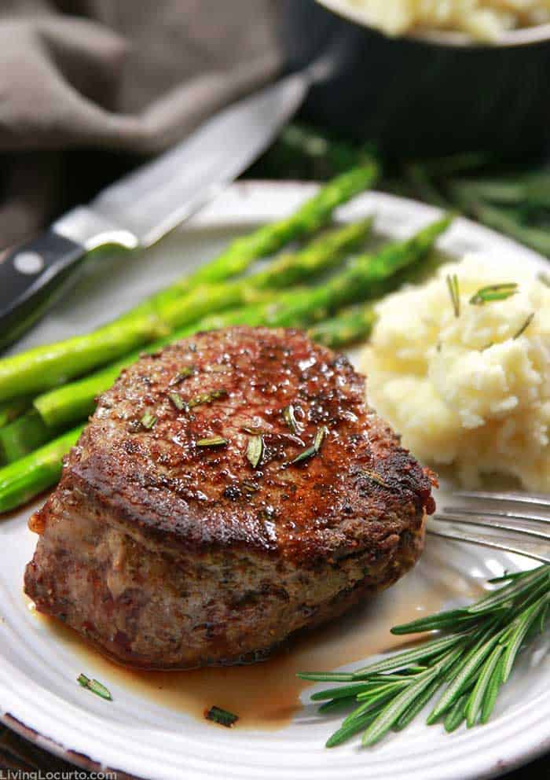
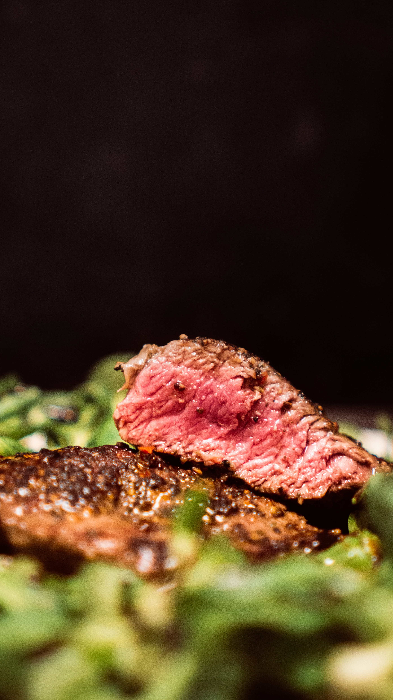

inspiration: Alex's Video
  https://natashaskitchen.com/pan-seared-steak/
https://natashaskitchen.com/pan-seared-steak/This recipe seems pretty good but on their steak doneness chart, they start with medium rare. I personaly like steaks a bit more rare so I dont find well done steaks very tasty.
https://www.thekitchn.com/steak-red-wine-sauce-recipe-23280649I really like how this recipe pairs wine with the steaks.
https://www.gritsandpinecones.com/filet-mignon-mushroom-red-wine-sauce/I like the addition of mushrooms in the red wine sauce for this recipe.
https://www.mubasic.com/I think that this webiste is able to reach its target audience in a playful way.
https://newestamericans.com/I loike how this website has images that are meaningful and pair well with the scrolling
https://rainforest.arkivert.no/#kartThis website is a developers nightmare and uses alot of bandwidth but is super cool.